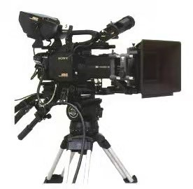

|
※索引： |
中国第一个演播室约1958年启用，它是央视第一个开放式理念的演播室，但由于场地和技术的问题达不到要求，就象征性的布置了一排机器。
|
如今的演播室无论是设施还是技术，与过去相比都大有进步。光是从布景来看，就要显得“高级不少”
|
|
演播室的音频系统主要按照下图构建，根据我们小组的考据，音频在系统构建上并无太大的变化，最主要也是最显著的变化，应该是模拟信号向数字信号的转变。
这个转变发生在一零年左右，当时大多电视台都采用模拟信号系统。
数字信号的概念早已提出，但出于安全性和成本的考虑，数字信号系统并没有大范围的普及。
一零年以后，技术已然成熟，数字信号与模拟信号并存的双信号音频系统得到大量应用。
（08年河南电视台的演播系统，图中只有模拟调音台 图片来源：河南电视台250平米演播室视音频改造方案）
那么数字信号的应用与模拟信号相比，优势在哪呢？
1. 模拟音频系统在信号传输的过程中需要保证设备之间的兼容性和设备自身的质量问题，否则可能在任一环节造成声音损失。这就说明模拟信号对设备的依赖性较高。
（11年黑龙江的演播系统，数字信号与模拟信号并存 图片来源：黑龙江电视台高清新闻演播室音频系统概述与应用）
2. 数字音频采用代码的方式进行传输，具有高保真的音频质量，不会受到距离传输、线缆长度以及信号失真等影响。
简单来说，就是数字信号的传输与模拟信号相比，音质更好。也许有人会问，这么一点音质的提升，又必要让我们如此大费周章，苦苦追寻吗？
是有必要的，高音质其实意味着技术的高标准，观众的高享受，而技术的突破与应用实则反应着国富民强，反应着人民的幸福安康啊。
太仓市广电总台搬迁前老楼里的演播厅配置了三基色日光管灯20台，2 KW聚光灯4只，由于90年代初配备的硅箱与调光台C经严重老化，无法正常使用
所以基本依靠空气开关来完成每日正常拍摄，灯光运营模式也基本上停留在照明的阶段。
因为演播厅的局限性，很多大型活动的时间也选择在第二天，利用自然的光线来满足拍摄的要求，艺术效果自然大打折扣。
如今演播室的灯光布置就要完善许多，一般主要包括：前主光灯；前辅光灯；顶灯；侧灯；背光灯；背光地灯；幕顶灯； 前地灯；暖光源(眼神灯)。
也可以按照主光灯，前侧灯，轮廓灯，背景等来划分。
播室内部灯光的配置，主要可分为前景灯系和背景灯系。前景灯系主要是指针对主持人进行的灯光配置，为使主持人看上去能与虚拟背景完美融合。
现在，在双人坐播的新闻演播室，每名播音员都采用三点式布光，播音员前方要布置2台LED影视平板灯做面光，2台LED聚光灯做眼神光；
而侧光，在播音员左右两侧各布置1台；在播音员后方布置2台LED聚光灯给播音员打轮廊光，
播音员正上方布置2台LED影视平板灯做顶光使用；而背景光使用3台LED影视平板灯。灯具布置完成后，还需要根据播音员的形象特征来调整灯光。
|
|
|
||
|
|
|||
|
|
|||
|
|
|
|
|
演播室一般可以分为实景演播室和虚拟演播室，在过去，当时的技术承载不了虚拟演播室的搭建，故大多采用实景。
而今，虚拟演播室以其极高的便捷性受到了大多数人的青睐，但这并不意味着实景演播室的全面消退，在某些场景下，实景演播室依然会被应用。
虚拟演播室主要采用绿幕技术
传统演播室在虚拟演播室中制作电视节目不需要在演播室内搭制实际背景。不需要搭建实景就不占用演播室搭景、拆景时间，省去庞大的道具仓库，
缩短了节目制作周期，节约了人力、物力、财力。制作成本大幅降低，周期大幅缩短。
但是虚拟场最的制作费用还是较高的，但随着技术的提高系统的完善，费用会有所降低。
虚拟场景能随时修改，反复利用。场景文件的交换、传送也极为方便，可有效实现虚拟场景的共享。
随着网络传输技术对虚拟演播室的支持，地域条件对电视节目制作的限制也不复存在，甚至可两地、数地同时同制一台节目。

演播室的摄像技术发展主要依赖于时代摄像技术发展，各大相机生产企业技术发展如何，演播室内技术就“进化”如何。
世界上第一个能应用于演播室的高清 CCD 传感器是在1990年由 SONY 开发的。规格是:1英寸,像素为200万。
在1992年, SONY 用这个1990年开发出来的1英寸 FIT CCD 制造了世界上第一台真正的高清演播宣摄像机: HDC —500。以规格来说当时是最高规格了。

而如今的演播室应用的摄像机就先进多了，比如SONY -HXC D70 演播室摄像机，采用了3片全高清2/3英寸型日 xmor CMOS成像器，能够提供高质量的全高清拍摄画面。
基于Sony 先进的传感器技术，HXC-D70可提供极佳的灵敏度，高达59d的一流的信噪比以及1000电视线的水平清晰度表现。
所有这些优良的指标都得益于高质量低噪声的数字信号处理能力，这些优异的指标结合在一起，在任何要求苛刻的拍摄环境、尤其是极低照度的环境中都能够捕捉到高质量的图像画面。
下图为博物馆演播室内主摄像机
参考网址：
https://zhuanlan.zhihu.com/p/367696552?utm_source=wechat_session&utm_medium=social&utm_oi=1398014419851423744&utm_campaign=shareopn
http://blog.sina.cn/dpool/blog/s/blog_607df1a301012de4.html
https://zhuanlan.zhihu.com/p/385724104?utm_source=wechat_session&utm_medium=social&utm_oi=1398014419851423744&utm_campaign=shareopn
参考文献：
<浅谈音频加解嵌系统在数字演播室的应用>汪邦慧
<浅论电视新闻直播演播室数字音频系统的构建>黄辉
<数字高清演播室嵌入音频应用>郑剑虹
<东京奥运会前场新闻演播室视频系统浅析>陈曦
<小型高清演播室音视频系统设计与建设>杨琳,刘岩